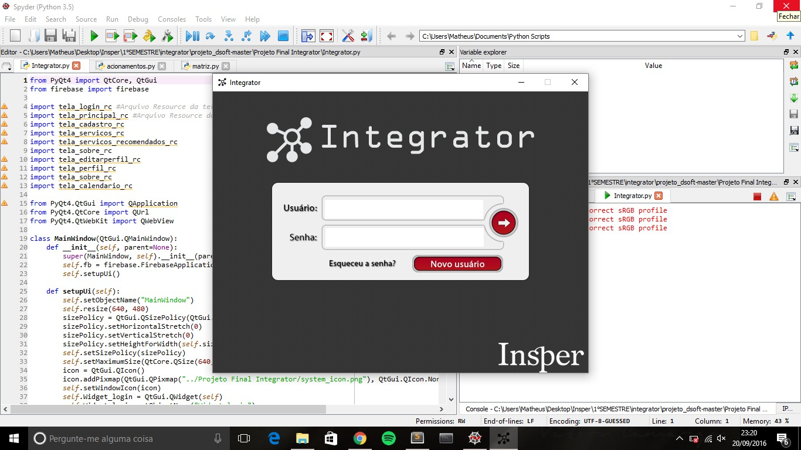

| Pagina Principal | Projetos | Sobre Mim |
Nome: Acionamento PWM com Eletrônica Analógica ou Filtro
Curso: Engenharia de Computação e Mecatrônica
Período: Segundo
Design:
Escrita:
Descrição: O projeto final de Design de Software foi a recriação de um jogo Mario com plataforma pygame, o objetivo deste projeto foi não só treinar o ferramental de uma linguagem nova, mas também conseguir integrar a criação de texturas e paletas juntamente com o código, assim modificando a aparência do jogo.
Deste modo, conseguimos traduzir o código complexo para um codigo simples e aplicável para qualquer computador e com uma aparência nova, resulta em algo realmente diferenciado sendo um ótimo exemplo do desenvolvimento de um produto, onde a parte criativa do processo se junta com a parte técnica.